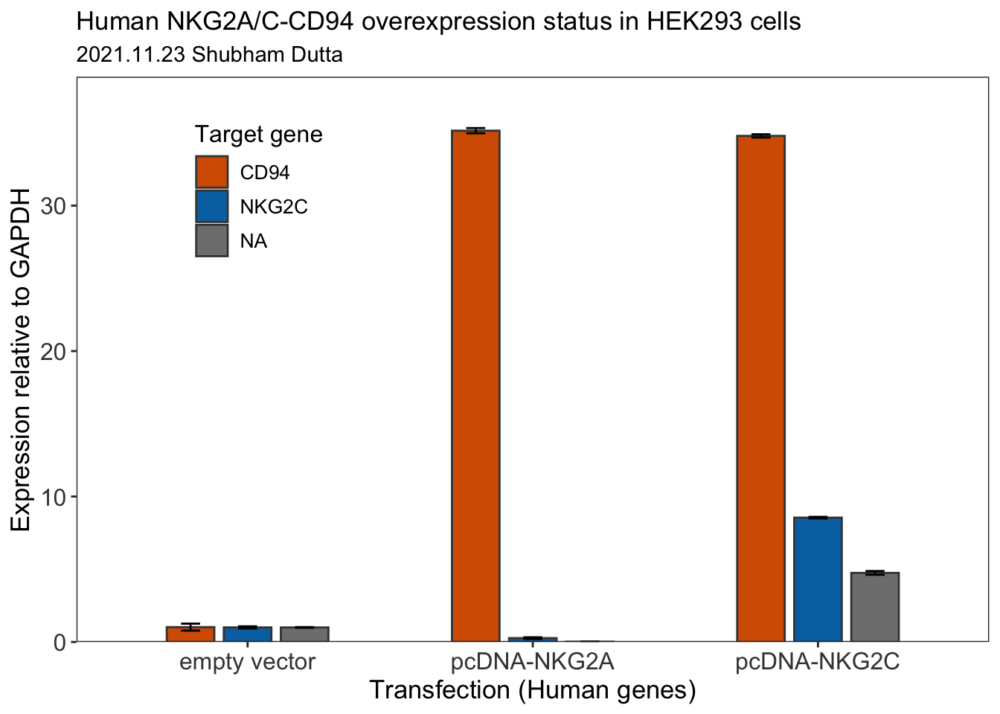

library(tidyverse)
library(readr)
library(janitor)Introduction
I will be using the Tidyverse package in R to analyse and plot a simple RT-qPCR experiment data. In this experiment, I have ectopically-expressed two proteins namely NKG2A and NKG2C (along with their binding partner CD94) in HEK293 cells. I want to assess the expression status of these genes in the HEK293 cells relative to GAPDH using the \(\Delta\)\(\Delta\)CT method. The experiment was run in a C1000 Touch Thermal Cycler instrument. The csv file can be found here.
The \(\Delta\)\(\Delta\)CT method for gene expression analysis
The \(\Delta\)\(\Delta\)CT method (also known as the 2–∆∆CT method) is a simple formula used to calculate the relative fold gene expression of samples when performing RT-qPCR. The method was developed by Kenneth Livak and Thomas Schmittgen in 2001 and is widely used (Livak & Schmittgen, 2001).
CT (or CQ) stands for the Cycle Threshold (or Cycle Quantification) of a sample. This is given after the qPCR reaction by the software. Simply put, it is the cycle number where the fluorescence generated by the PCR product is distinguishable from the background fluorescence signal.
The symbol \(\Delta\) (Delta) is a mathematical term used to describe the difference between two values.
Let’s see how we can calculate the \(\Delta\)\(\Delta\)CT:
\(\Delta\)\(\Delta\)CT = \(\Delta\)CT (treated sample) – \(\Delta\)CT (untreated sample)
Essentially, \(\Delta\)\(\Delta\)CT is the difference between the \(\Delta\)CT values of the treated/experimental sample and the untreated/control sample. But what does \(\Delta\)CT refer to?
\(\Delta\)CT = CT (gene of interest) – CT (housekeeping gene)
Basically, \(\Delta\)CT is the difference in \(\Delta\)CT values for your gene of interest and your housekeeping gene for a given sample. This is to essentially normalise the gene of interest to a gene which is not affected by your experiment.
Finally, to work out the fold gene expression (FC) we need to do 2 to the power of negative \(\Delta\)\(\Delta\)CT:
FC = 2–\(\Delta\)\(\Delta\)CT
Let us move to the fun part now!
Data Analysis
Install and load Tidyverse package
We will use the Tidyverse package for the data analysis.
Load the tidyverse and readr packages into R Studio environment:
Importing the data
Now we will import the qPCR data (a csv document in this case) into the R Studio environment using the read.csv function and store it as a dataframe (df) called qpcr.
qpcr <- read_csv("qPCR_HEKs_OE_NKG2A-C_human.csv") %>% clean_names()Rows: 60 Columns: 15
── Column specification ────────────────────────────────────────────────────────
Delimiter: ","
chr (6): Well, Fluor, Target, Content, Sample, Biological Set Name
dbl (8): Cq, Cq Mean, Cq Std. Dev, Starting Quantity (SQ), Log Starting Quan...
lgl (1): Well Note
ℹ Use `spec()` to retrieve the full column specification for this data.
ℹ Specify the column types or set `show_col_types = FALSE` to quiet this message.tibble(qpcr)# A tibble: 60 × 15
well fluor target content sample biological_set_name cq cq_mean
<chr> <chr> <chr> <chr> <chr> <chr> <dbl> <dbl>
1 A01 SYBR GAPDH Unkn Sample 1 empty vector 14.5 14.5
2 A02 SYBR NKG2A Unkn Sample 1 empty vector 20.0 20.0
3 A03 SYBR NKG2C Unkn Sample 1 empty vector 17.5 17.5
4 A04 SYBR CD94 Unkn Sample 1 empty vector 19.8 19.8
5 A05 SYBR GAPDH Unkn Sample 1 pcDNA-NKG2A 14.5 14.5
6 A06 SYBR NKG2A Unkn Sample 1 pcDNA-NKG2A 14.3 14.3
7 A07 SYBR NKG2C Unkn Sample 1 pcDNA-NKG2A 19.2 19.2
8 A08 SYBR CD94 Unkn Sample 1 pcDNA-NKG2A 14.4 14.4
9 A09 SYBR GAPDH Unkn Sample 1 pcDNA-NKG2C 14.5 14.5
10 A10 SYBR NKG2A Unkn Sample 1 pcDNA-NKG2C 22.3 22.3
# ℹ 50 more rows
# ℹ 7 more variables: cq_std_dev <dbl>, starting_quantity_sq <dbl>,
# log_starting_quantity <dbl>, sq_mean <dbl>, sq_std_dev <dbl>,
# set_point <dbl>, well_note <lgl>There are 15 columns (variables) in our data but we only need a some them for our data analysis. Therefore, using the select function we will extract the columns we need and store them in a new df called tidyData.
tidyData <- qpcr %>% select(target:cq, -content)
glimpse(tidyData)Rows: 60
Columns: 4
$ target <chr> "GAPDH", "NKG2A", "NKG2C", "CD94", "GAPDH", "NKG2A…
$ sample <chr> "Sample 1", "Sample 1", "Sample 1", "Sample 1", "S…
$ biological_set_name <chr> "empty vector", "empty vector", "empty vector", "e…
$ cq <dbl> 14.45711, 20.02642, 17.51733, 19.79295, 14.48283, …Lets look at the 4 columns now:
- target: This variable stores the different target genes which in this case are GAPDH, NKG2A, NKG2B, and CD94.
- sample: These are different biological replicates. There are 5 replicates. There are no technical replicates for this experiment.
- biological_set_name: This variable stores the three different conditions. HEK cells are transfected with empty vector (empty vector), NKG2A/ CD94 (pcDNA-NKG2A), and NKG2C/ CD94 (pcDNA-NKG2C).
- **cq*: The Cq (or CT) value for each condition. From here on till the end I will be using CT and CQ interchangeably.
Calculate \(\Delta\)CT
The \(\Delta\)CT is the differnce between the CT of the housekeeping gene and the target gene. To calculate \(\Delta\)CT we need to determine the average CT of GAPDH for three conditions (empty vector, pcDNA-NKG2A, and pcDNA-NKG2C).
We will use the filter function to extract and store the CT values of GAPDH in a new df called gapdh_only. Then we will use the group_by, summarise, and mean() functions to calculate mean CTs for the three conditions and store the values in another df called avg_gapdh.
%>% is called the pipe operator. This special operational function available under the magrittr and dplyr package (basically developed under magrittr), which allows us to pass the result of one function/argument to the other one in sequence.
gapdh_only <- tidyData %>%
filter(target == "GAPDH")
avg_gapdh <- gapdh_only %>%
group_by(biological_set_name) %>%
summarize(ref_cq = mean(cq))
avg_gapdh# A tibble: 3 × 2
biological_set_name ref_cq
<chr> <dbl>
1 empty vector 14.5
2 pcDNA-NKG2A 14.5
3 pcDNA-NKG2C 14.5We have stored the mean GAPDH CT value as ref_cq. We will subtract the ref_cq from the cq of the other target genes. Let’s take NKG2A as an example and see a step-by-step process:
First, we will extract the NKG2A target gene data for all the conditions and store it in nkg2a_only df.
nkg2a_only <- tidyData %>% filter(target == "NKG2A")
head(nkg2a_only)# A tibble: 6 × 4
target sample biological_set_name cq
<chr> <chr> <chr> <dbl>
1 NKG2A Sample 1 empty vector 20.0
2 NKG2A Sample 1 pcDNA-NKG2A 14.3
3 NKG2A Sample 1 pcDNA-NKG2C 22.3
4 NKG2A Sample 2 empty vector 20.0
5 NKG2A Sample 2 pcDNA-NKG2A 14.4
6 NKG2A Sample 2 pcDNA-NKG2C 22.3Second, we will join the avg_gapdh & nkg2a_only dfs using left_join:
nkg2a_gapdh <- left_join(nkg2a_only, avg_gapdh, by = "biological_set_name")
head(nkg2a_gapdh)# A tibble: 6 × 5
target sample biological_set_name cq ref_cq
<chr> <chr> <chr> <dbl> <dbl>
1 NKG2A Sample 1 empty vector 20.0 14.5
2 NKG2A Sample 1 pcDNA-NKG2A 14.3 14.5
3 NKG2A Sample 1 pcDNA-NKG2C 22.3 14.5
4 NKG2A Sample 2 empty vector 20.0 14.5
5 NKG2A Sample 2 pcDNA-NKG2A 14.4 14.5
6 NKG2A Sample 2 pcDNA-NKG2C 22.3 14.5Finally, we will calculate the \(\Delta\)CT for the NKG2A dataset and store the values in nkg2a_gapdh df. The mutate function basically calculates del_cq values and adds a new column (variable) to the existing df.
nkg2a_gapdh <- nkg2a_gapdh %>% mutate(del_cq = cq - ref_cq)
head(nkg2a_gapdh)# A tibble: 6 × 6
target sample biological_set_name cq ref_cq del_cq
<chr> <chr> <chr> <dbl> <dbl> <dbl>
1 NKG2A Sample 1 empty vector 20.0 14.5 5.57
2 NKG2A Sample 1 pcDNA-NKG2A 14.3 14.5 -0.135
3 NKG2A Sample 1 pcDNA-NKG2C 22.3 14.5 7.85
4 NKG2A Sample 2 empty vector 20.0 14.5 5.59
5 NKG2A Sample 2 pcDNA-NKG2A 14.4 14.5 -0.0720
6 NKG2A Sample 2 pcDNA-NKG2C 22.3 14.5 7.88 Please feel free to use the dataset to calculate the \(\Delta\)CT for NKG2C and CD94 genes.
Calculate \(\Delta\)\(\Delta\)CT
The \(\Delta\)\(\Delta\)CT is the difference between the \(\Delta\)CT values of experimental sample and the control sample.
First, we calculate mean CT for “empty vector” from nkg2a_gapdh df and store it in the nkg2a_empty variable.
nkg2a_empty <- nkg2a_gapdh %>% filter(biological_set_name == "empty vector") %>% summarise(mean_empty = mean(del_cq)) %>% pull(mean_empty)
nkg2a_empty[1] 5.592248Second, we calculate the \(\Delta\)\(\Delta\)CT values and append the values to nkg2a_gapdh df.
nkg2a_gapdh <- nkg2a_gapdh %>% mutate(del_del_cq = del_cq - nkg2a_empty)
head(nkg2a_gapdh)# A tibble: 6 × 7
target sample biological_set_name cq ref_cq del_cq del_del_cq
<chr> <chr> <chr> <dbl> <dbl> <dbl> <dbl>
1 NKG2A Sample 1 empty vector 20.0 14.5 5.57 -0.0191
2 NKG2A Sample 1 pcDNA-NKG2A 14.3 14.5 -0.135 -5.73
3 NKG2A Sample 1 pcDNA-NKG2C 22.3 14.5 7.85 2.26
4 NKG2A Sample 2 empty vector 20.0 14.5 5.59 -0.00487
5 NKG2A Sample 2 pcDNA-NKG2A 14.4 14.5 -0.0720 -5.66
6 NKG2A Sample 2 pcDNA-NKG2C 22.3 14.5 7.88 2.29 Next, we can calculate the fold change gene expression for each condition using the FC formula above.
nkg2a_geneExp <- nkg2a_gapdh %>% mutate(geneExp = 2^(del_del_cq))
head(nkg2a_geneExp)# A tibble: 6 × 8
target sample biological_set_name cq ref_cq del_cq del_del_cq geneExp
<chr> <chr> <chr> <dbl> <dbl> <dbl> <dbl> <dbl>
1 NKG2A Sample 1 empty vector 20.0 14.5 5.57 -0.0191 0.987
2 NKG2A Sample 1 pcDNA-NKG2A 14.3 14.5 -0.135 -5.73 0.0189
3 NKG2A Sample 1 pcDNA-NKG2C 22.3 14.5 7.85 2.26 4.78
4 NKG2A Sample 2 empty vector 20.0 14.5 5.59 -0.00487 0.997
5 NKG2A Sample 2 pcDNA-NKG2A 14.4 14.5 -0.0720 -5.66 0.0197
6 NKG2A Sample 2 pcDNA-NKG2C 22.3 14.5 7.88 2.29 4.89 Finally, let us calculate statistical parameters using mean() and sd() for the data:
nkg2a_geneExp_final <- nkg2a_geneExp %>% group_by(biological_set_name) %>% summarise(mean_geneExp = mean(geneExp), sd_geneExp = sd(geneExp)) %>% mutate(Target = c("NKG2A", "NKG2A", "NKG2A"))
head(nkg2a_geneExp_final)# A tibble: 3 × 4
biological_set_name mean_geneExp sd_geneExp Target
<chr> <dbl> <dbl> <chr>
1 empty vector 1.00 0.0211 NKG2A
2 pcDNA-NKG2A 0.0196 0.000423 NKG2A
3 pcDNA-NKG2C 4.75 0.127 NKG2A Please feel free to use the dataset to calculate the \(\Delta\)\(\Delta\)CT for NKG2C and CD94 genes.
Lets move on to the visualization of our data.
Data Visualization
Before plotting the data let us make a single df. We will use full_join to accomplish this and make a new df called all which contains the analysis for individual targets namely NKG2C (nkg2c_geneExp_final) and CD94 (cd94_geneExp_final).
all <- full_join(nkg2a_geneExp_final, nkg2c_geneExp_final)
all <- full_join(all, cd94_geneExp_final)all# A tibble: 9 × 5
biological_set_name mean_geneExp sd_geneExp Target target
<chr> <dbl> <dbl> <chr> <chr>
1 empty vector 1.00 0.0211 NKG2A <NA>
2 pcDNA-NKG2A 0.0196 0.000423 NKG2A <NA>
3 pcDNA-NKG2C 4.75 0.127 NKG2A <NA>
4 empty vector 1.00 0.0727 <NA> NKG2C
5 pcDNA-NKG2A 0.266 0.0564 <NA> NKG2C
6 pcDNA-NKG2C 8.55 0.0526 <NA> NKG2C
7 empty vector 1.02 0.241 <NA> CD94
8 pcDNA-NKG2A 35.2 0.179 <NA> CD94
9 pcDNA-NKG2C 34.8 0.109 <NA> CD94 Let us now use ggplot package to plot a bar plot for the RT-qPCR data.
ggplot(all, aes(x = biological_set_name, y = mean_geneExp, fill = target)) +
geom_bar(stat = "identity", width = 0.5, position = position_dodge(0.6), color = "#434343") +
geom_errorbar(aes(ymin = mean_geneExp - sd_geneExp, ymax = mean_geneExp + sd_geneExp), width=.2, position = position_dodge(0.6)) +
theme_bw()+
labs(title = "Human NKG2A/C-CD94 overexpression status in HEK293 cells",
subtitle = "2021.11.23 Shubham Dutta",
x = "Transfection (Human genes)",
y = "Expression relative to GAPDH",
fill = "Target gene",
caption = NULL)+
theme(plot.title=element_text(size=13),
axis.text=element_text(size=12, color = "#434343"),
axis.title=element_text(size=13),
legend.text=element_text(size=10),
legend.title=element_text(size=12),
legend.position = c(0.2, 0.8),
panel.grid.major = element_blank(),
panel.grid.minor = element_blank())+
scale_fill_manual(values = c("#d55e00", "#0072b2", "#009e73")) +
scale_y_continuous(expand = expansion(mult = c(0, .1)))Warning: A numeric `legend.position` argument in `theme()` was deprecated in ggplot2
3.5.0.
ℹ Please use the `legend.position.inside` argument of `theme()` instead.
References
- Kenneth J. Livak, Thomas D. Schmittgen, Analysis of Relative Gene Expression Data Using Real-Time Quantitative PCR and the 2−ΔΔCT Method, Methods, Volume 25, Issue 4, 2001, Pages 402-408, ISSN 1046-2023, https://doi.org/10.1006/meth.2001.1262.